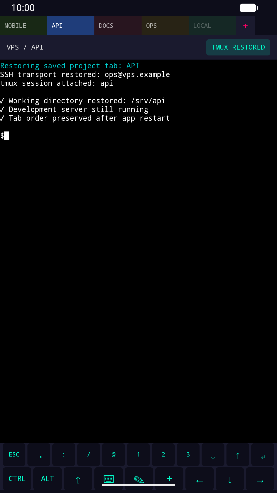
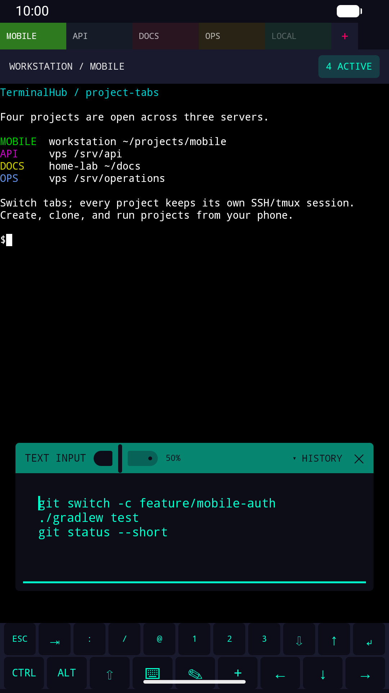
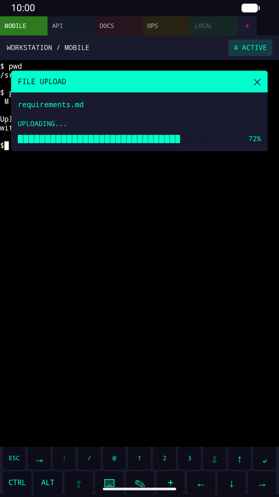

Start server projects from your phone. Keep every project in a persistent tab.
TerminalHub organizes SSH-based projects across one or more servers. The Android app remembers your tab workspace; tmux keeps the actual remote processes alive.
This inventory is derived from the current source tree and the full Git history—not only from the marketing description. “Shipped” means the capability is implemented and reachable in the current production UI. Release-specific device behavior can still vary.
Workspace and tabs Shipped
Open projects from one or many servers in a shared tab bar.
Persist open tabs, their order, active project and per-project tab colors.
Wrap tabs across rows when the workspace grows.
Tap to switch; swipe the key bar for previous/next connected tab.
Long-press a tab to close it or move it left/right.
Keep disconnected tabs visible and reconnect one or all.
Recent Projects sheet with active/closed sessions, relative times and multi-select reopen.
Close only the tab, optionally kill its tmux session, or move the project to .trash and remove its profile.
Servers and SSH Shipped
Multiple saved server profiles with name, host, port, username and projects folder.
Password and private-key authentication.
Generate an RSA SSH key on Android, copy its public key, or install it using a one-time password.
Test SSH from the server editor with detailed failure feedback.
Edit or delete a server with confirmation; linked credentials and project profiles are removed.
SSH keepalives with four timing profiles and active-tab/all-session scope.
Manual reconnect, reconnect-all and recovery state diagnostics.
Project automation Shipped
SSH-server or local-device project target.
Choose a server independently for every project.
Create a project directory or shallow-clone an optional Git repository on first open.
Normalize GitHub HTTPS repository URLs to SSH form.
Create/reuse tmux sessions, recover dead panes and enable tmux mouse support.
Optional plain SSH shell without tmux.
Custom setup script, post-connect script and final custom command.
Template placeholders for project name, path and session name.
Terminal and mobile input Shipped
Adapted Termux terminal emulator/view with ANSI/VT behavior and scrollback.
Software and hardware keyboards, clipboard paste and touch focus.
Configurable multi-row special-key bar with modifier and navigation keys.
Multiline input panel, adjustable opacity and per-project history.
Optional Send-and-Enter mode, plus voice-dictation-safe text handling.
Text selection, Copy, Paste, Search and Open actions.
Search with highlighted matches and previous/next navigation.
Touch scroll, alternate-screen/tmux scrolling, Page Up/Down and jump to bottom.
Links and Android browser Shipped
Tap http://, https:// and www. links in terminal output.
Open links in the phone's default browser or compatible Android app.
Recognize URLs split across terminal soft wraps and several visible rows.
Give URL taps priority even when a tmux application has mouse tracking enabled.
Select URL text and choose Open from the selection action menu.
Files and Android sharing Shipped
Upload one or multiple Android-selected files to the active remote project.
Auto-open the picker, auto-start transfers and show per-file progress.
Share a file from another Android app directly into the active TerminalHub project.
Copy or insert the uploaded remote path into the project's multiline input.
List top-level regular files—including hidden files—in the remote project folder.
Download a selected remote file using Android's destination picker with progress.
Open a completed download in a compatible Android app using filename-aware MIME types.
Configuration and observability Shipped
Fast-resume behavior and live background/recovery status display.
YAML export of servers, currently open server-linked project profiles and key-bar layout; credentials are excluded.
YAML import that replaces configuration and clears stale sessions/credentials.
App logs with search, severity filters, auto-scroll, entry view, selection, copy and export.
Session log list and export.
Crash capture for the next launch and an ANR watchdog for diagnostics.
About dialog with version, license, Termux attribution and source link.
Biometric startup authentication when supported by the device.
Developer and diagnostic support Repository
Separate diagnostic application flavor, including local terminal workflow.
Unit, UI/instrumentation and terminal-module tests.
Repeatable emulator screenshot capture script.
Production APK/AAB builds with explicit release signing.
GPL-3.0 source and Termux third-party attribution.
Human docs, llms.txt, full agent context and JSON topic index.
Git-history evidence for the corrected file and link features
Remote download: introduced in aee9339, repaired in 8bebc88 and 4cab703, and extended to open completed downloads in 81de921.
Open terminal links: repaired in 8bebc88, made available from selected URL text in 38bdef6, and made compatible with tmux mouse mode in b7116da.
Multi-file upload and Android sharing: added in 206509b and b8d5391, with remote-path copy/insertion in 61cafee.
The current source remains authoritative; commit identifiers are included so maintainers and agents can trace why these capabilities are documented.
Implemented but not currently routed
A Server Status screen and a legacy full-screen upload route remain in the source tree, but no current production menu links to them. They are documented as internal/dormant code, not as reachable production features.
START HERE
The mental model
AndroidTerminalHub UI, saved profiles and tab order
→
SSHEncrypted connection to a machine you control
→
Server projectFolder, tools, Git checkout and processes
→
tmuxSession survives app and network disconnects
The computer is not used as a controller.
You create projects, start commands, switch tabs, type, inspect output and upload files from Android. A reachable server is still required for the main workflow because that is where the shell and processes run.
Core objects
Server
A reusable SSH profile: name, host, port, username, authentication, root project folder and optional setup script.
Project
A named workspace assigned to a server, with an optional Git URL, tmux choice, post-connect script and startup command.
Tab
An open project session. TerminalHub stores open tabs, active tab and order so the mobile workspace can be reconstructed.
Remote session
The SSH transport and, normally, a named tmux session. This is the part that keeps work running remotely.
BEFORE INSTALLING
Requirements
Android
Android 7.0 / API 24 or newer.
Network access to at least one server for remote projects.
Optional biometric hardware for the startup gate.
Remote machine
Linux or macOS workstation, home server, VPS or lab machine.
SSH server and a user account.
tmux for persistent sessions.
Optional git and any project-specific tools.
Network recommendation
Prefer a private network or VPN such as Tailscale. Avoid exposing password-based SSH directly to the public internet.
FIRST PROJECT
Quick start
Prepare the server.
Confirm that you can reach it over SSH and install tmux. For Debian/Ubuntu: sudo apt install tmux. For macOS: brew install tmux.
Add a server in TerminalHub.
Enter its host, port and username. Generate an SSH key in the app or paste an existing private key.
Test SSH.
Use Test SSH before creating projects. Fix authentication or routing errors here first.
Add a project.
Choose the server, name the project, and optionally provide a Git repository URL and a command such as npm run dev, htop or codex.
Open the project.
TerminalHub creates or clones the remote folder, creates or attaches to tmux, runs the project script, and opens a tab.
Add more tabs.
Repeat for projects on the same server or other servers. Swipe the key bar or tap a tab to switch.
Minimal remote preparation example
# Debian or Ubuntu server
sudo apt update
sudo apt install openssh-server tmux git
mkdir -p "$HOME/terminalhub"
# Verify from another machine before configuring the app
ssh your-user@your-server
tmux -V
CONNECTION PROFILES
Servers and SSH
Server fields
Field
Purpose
Default / example
Display name
Human-readable name used in the UI.
Home PC
Host or IP
DNS name, LAN IP, public address or private-VPN address.
workstation.tailnet.ts.net
SSH port
TCP port used by the SSH server.
22
Username
User account on the remote machine.
developer
Private key
SSH private key stored locally on Android.
Generated or pasted PEM key
One-time password
Optional password used to install a generated public key.
Leave blank after key setup
Projects folder
Parent folder for projects created through this server profile.
~/terminalhub
Setup script
Advanced server-level script template.
Built-in setup behavior
Recommended key workflow
Tap Generate key.
Either copy the public key to ~/.ssh/authorized_keys, or provide a one-time password and tap Install public key.
Keep the private key on Android. Never paste the private key into authorized_keys or copy it to the server.
Run Test SSH, then clear the one-time password if it is no longer needed.
Verify the server host key
On first Test SSH or project connection, TerminalHub blocks the attempt and shows the host-key algorithm and SHA256: fingerprint.
Compare it with a fingerprint obtained independently from the intended server, then choose Trust and retry.
The same host and port must present that exact key for terminal, upload, download, and public-key installation connections.
A changed host key is blocked.
TerminalHub shows the trusted and newly presented fingerprints and never replaces the trusted key automatically. Verify a legitimate server replacement outside the app, open the server editor, confirm Forget trusted key, and run Test SSH again. The trust record is shared by profiles using the same host and port and is not included in configuration exports.
REUSABLE WORKSPACES
Projects
A project answers four questions: where should it run, which folder should it use, how should that folder be prepared, and which command should start last?
Setting
Behavior
Target
Normally an SSH server. A local-device target also exists and uses a plain local shell without tmux.
Name
Used for the tab, remote folder, and normalized tmux session name.
Git repository URL
If set and no checkout exists, TerminalHub performs a shallow clone on first connect. GitHub HTTPS URLs are normalized to SSH form when saved.
Use tmux
Creates a named tmux session or attaches to it when it already exists. Enabled by default for SSH projects.
Custom script
Runs after connection when a new tmux session is created, or on each plain-shell/local start. Default: cd {{PROJECT_PATH}}.
Custom command
Runs last under the same startup rule. Use it for a development server, monitor, editor or optional AI terminal agent.
Template placeholders
{{PROJECT_NAME}} — the configured project name.
{{PROJECT_PATH}} — the resolved project directory.
{{SESSION_NAME}} — the lowercase, shell-safe tmux name derived from the project name.
First-open sequence
ensure project directory exists
└─ if Git URL is set and .git is absent: shallow-clone repository
└─ if tmux is enabled: create or reuse the named session
└─ enable tmux mouse support
└─ attach interactively
└─ for a newly created tmux session: run custom script
└─ run custom command, when configured
When TerminalHub reattaches to an already running tmux session, it deliberately skips the custom script and custom command so it does not start duplicate processes. Plain SSH and local projects run their startup commands when a new terminal session is opened.
Deleting a project profile is designed to move its remote directory under a .trash folder rather than immediately destroying it. Always verify behavior against the current build before relying on recovery.
THE MAIN FEATURE
Tabs and persistence
Each open project becomes a tab containing the project identity, target and terminal-session state. You can open several projects across several servers and move between them without rebuilding context.
What TerminalHub persists
Server and project profiles.
Which project tabs are open.
Tab order and active project.
Per-project text-input history. A draft stays associated with its tab while the current app UI remains alive, but is not promised across an Android process restart.
What tmux persists
The remote shell and its running processes.
Terminal state on the remote server.
Work across SSH disconnects, app restarts and network changes.
Important distinction
Android cannot guarantee a live SSH socket when the app is not active. TerminalHub restores saved tabs and reconnects; tmux is what keeps remote work alive in between.

Real Android emulator capture: a saved tab reattaching to tmux.
Ctrl, Alt and Shift can modify the next printable or navigation key. Common terminal escape sequences are sent directly.
Multiline input
Compose commands or pasted text in a larger panel, adjust panel opacity, recall recent per-project entries and choose whether Send also executes with Enter.
Search and scroll
Search terminal buffer text, move among matches and jump back to the bottom after reviewing earlier output.
Tab gestures
Tap tabs directly, reorder them, or swipe horizontally on the key bar to move to the previous or next connected tab.
Clipboard and keyboard
Select and copy terminal text, paste clipboard content, show or hide the Android keyboard, and use hardware-key mappings including function keys.
Open terminal links
Tap HTTP(S) or www. URLs to open them in the phone's browser. Wrapped links are reconstructed, and taps still work when tmux mouse tracking is active.
Selection actions
Long-press to select text, then Copy, Paste, Search the selected text, or Open it when the selection is a URL.

Real Android emulator capture: multiline input inside a project tab.
ANDROID ↔ ACTIVE PROJECT
File upload and remote download
Upload from Android
Use the upload action in the terminal key bar to select one or several documents from Android and send them into the active project's remote directory. The picker opens automatically, transfer starts after selection, and the dialog reports progress.
Open the destination project tab and confirm it is connected.
Tap the upload control in the key bar.
Choose one or more files using Android's document picker.
Wait while TerminalHub uploads the queue to the project root.
For a single file, copy the remote path or let TerminalHub insert it into multiline input.
You can also use Android's Share action in another app and choose TerminalHub. The shared file is prepared for upload into the currently active project tab.
Download to Android
Open a connected SSH project and tap the download key (down-arrow in the default key bar).
TerminalHub lists regular files in the project's top-level remote folder, including hidden files.
Tap a file and choose its Android destination and name.
Wait for SCP progress to complete.
Tap Open to launch the downloaded file in a compatible Android app.
Current download scope
Remote download is available for SSH projects. The browser lists files—not subdirectories—in the top level of the active project folder. Opening after download depends on an installed Android app that supports the detected file type.

Real Android emulator capture: upload progress in the active tab.
CONTROL & RECOVERY
Settings and stored data
Area
Available behavior
Default
Fast resume
Prefer restoring the previous mobile tab workspace quickly on launch.
Enabled
Text-input Send
Choose whether sending text also appends Enter and executes it.
Send text only
SSH keepalive
Send keepalive traffic while a connection exists.
Enabled
Keepalive profile
Aggressive, Balanced, Battery Saver or Ultra Battery Saver.
Balanced
Keepalive scope
Active tab only or all current sessions.
Active tab only
Terminal key bar
Edit rows and actions, then persist the layout.
Two-row touch layout
Biometric gate
Startup authentication when Android biometric authentication is available; bypassed on unsupported devices.
Availability controlled
Export/import
Move server, open server-linked project, and key-bar configuration through YAML. Passwords and private keys are excluded.
Manual action
Logs
Inspect/search/copy/export app logs and view session history.
Stored locally
Data locations and responsibilities
Structured profiles, open-tab state, logs and text-input history are stored in app-local Android data.
App preferences store user settings and key-bar layout.
SSH private-key material and credentials use Android-local protected storage mechanisms implemented in the security package.
Project repositories, shell history, build artifacts and running processes remain on the configured server.
Configuration export is user initiated and excludes passwords/private keys, but still contains server addresses, usernames, paths, scripts and repository URLs. Treat exports as sensitive.
TerminalHub does not include an AI model. It is a practical mobile workspace for terminal agents installed on your servers, alongside any other command-line workflow.
One agent per project
Create separate tabs for an API, Android app, website and operations repository. Configure codex, claude, gemini or another tool as each project's custom command.
Parallel visibility
Switch tabs to review output, answer prompts and keep track of several long-running sessions from one phone.
Server-side context
Agents operate in the actual repository and toolchain on your server. TerminalHub transports terminal input and output; it does not proxy model data through a TerminalHub cloud.
Persistent execution
Run each agent inside tmux so it can continue when Android disconnects. Reattach from the saved project tab later.
Suggested project configuration
Project name: api-agent
Server: vps
Git URL: git@github.com:your-org/api.git
Use tmux: yes
Custom script: cd {{PROJECT_PATH}}
Custom command: codex
Know the boundaries.
Agent authentication, model billing, permissions, sandboxing and safety are controlled by the agent tool and server environment—not by TerminalHub.
DIAGNOSE IN ORDER
Troubleshooting
SSH test fails
Confirm host, port and username.
Verify Android can reach the address on its current network.
Test the same account with another SSH client.
Check the private-key format and the matching public key in ~/.ssh/authorized_keys.
Inspect TerminalHub's app log for the exact authentication or transport error.
A saved tab does not reconnect
Confirm the server is reachable.
Tap Reconnect; use Reconnect all if several tabs are disconnected.
SSH into the server and run tmux ls.
Verify that the project still has tmux enabled and that its name still maps to the expected session.
Review app and session logs.
The process stopped while the app was closed
The Android app does not keep a foreground service running. The remote process must run inside tmux. Confirm with tmux ls on the server and start the project again if the tmux session itself exited.
Git clone fails
Confirm Git is installed on the server.
For a private repository, confirm the server—not Android—has credentials or an SSH deploy key for that Git host.
Test git clone manually on the server.
Inspect whether TerminalHub created the target folder after reporting clone failure.
Upload fails
Confirm the active project is connected.
Verify write permission in the project directory and free disk space.
Try a small file with a simple filename.
Keep the app active until the progress dialog completes.
Inspect the app log for SFTP/SCP errors.
Terminal sizing, keyboard or rendering is wrong
Hide and reopen the Android keyboard.
Switch tabs and return to force a terminal size synchronization.
Rotate the device once if allowed.
Capture Android version, device model, screenshot and relevant logs when opening an issue.
A server is required for the main product workflow. TerminalHub is not a full Linux distribution running entirely on Android.
It does not guarantee a live background SSH connection. Tabs are restored and reconnected; tmux provides remote persistence.
It does not supply servers. You configure machines and credentials you control.
It does not include AI. AI terminal tools are optional server-side programs.
It is not affiliated with Termux. It adapts open-source Termux terminal components under their licenses.
Remote download is currently top-level and file-only. It lists regular files in the active project folder; it is not a recursive remote file manager.
Local projects have a narrower model. The local target uses a plain Android-side shell and does not provide tmux persistence.
Interactive full-screen terminal programs vary. Behavior depends on the remote shell, TERM capabilities, network quality and Android input method.
FOR CONTRIBUTORS AND AGENTS
Architecture
Layer
Responsibilities
Primary paths
UI
Jetpack Compose screens, terminal host, tabs, dialogs and settings.
app/src/main/.../ui/
Domain
Session orchestration, script templating and focused use cases.
app/src/main/.../domain/
SSH
Connections, reconnect policy, tmux, status polling and transfer.
app/src/main/.../data/ssh/
Persistence
Room entities/DAOs, repositories, runtime snapshots and settings.
app/src/main/.../data/db/, repository/, runtime/
Security
Biometric gate, key generation, protected preferences and key storage.
app/src/main/.../data/security/
Terminal
Adapted Termux terminal emulator/view modules and Android bridge.
terminal-emulator/, terminal-view/
Session lifecycle
saved project tab
→ SessionHostViewModel requests restore/connect
→ TerminalSessionManager selects local or SSH target
→ SshManager opens transport and shell
→ ScriptTemplateEngine prepares folder / clone / tmux
→ terminal session is attached to the project tab
→ Room/runtime state records the open workspace
→ on return: restore tabs, reconnect SSH, reattach tmux
Technology
Kotlin, coroutines and StateFlow.
Jetpack Compose and Navigation Compose.
Hilt dependency injection.
Room for structured local persistence.
Trilead-based SSH transport and SFTP/SCP helpers.
Adapted Termux terminal emulator and view components.
CONTRIBUTING
Build and test
Use JDK 17 or newer and Android SDK Platform 36. The repository contains a Gradle wrapper.
git clone https://github.com/joynes/terminalhub.git
cd terminalhub
# Diagnostic build: separate app ID, safe for repeated local testing
./gradlew assembleDiagnosticDebug
# Production debug build
./gradlew assembleProductionDebug
# Unit tests and lint
./gradlew app:testProductionDebugUnitTest lintProductionDebug
# Production release artifacts
./gradlew assembleProductionRelease bundleProductionRelease
Use the diagnostic flavor for device or emulator investigation so it does not overwrite the installed Play Store app. The repository also includes scripts/capture-play-screenshots.sh for repeatable emulator screenshot capture.
The human page and machine-readable files describe the same product boundaries. Agents should prefer explicit facts and source links over inferring behavior from screenshots or marketing copy.
Load /llms.txt. It identifies canonical documents, repository paths and decision rules.
Use /docs-index.json for routing. Select the smallest section matching the user's task.
Use /llms-full.txt when broad context is needed. It is plain text, stable and free of layout noise.
Verify version-sensitive claims in source. UI behavior and build settings can change after this page is published.
State operational boundaries. Do not imply that Android hosts the remote project, that SSH remains permanently alive, or that AI is bundled.
Ask for safe diagnostic evidence. Prefer app version, Android version, target type, exact error, app log excerpt and whether tmux ls shows the session. Never request private keys or passwords.
Agent answer contract
When helping a TerminalHub user:
1. Identify whether the target is SSH or local.
2. Separate Android app state, SSH transport state, and tmux/server state.
3. Give the shortest safe diagnostic sequence.
4. Never request or reproduce secrets.
5. Mark unsupported or unverified behavior explicitly.
6. Link the relevant stable section of this documentation.
7. For code changes, inspect AGENTS.md and current source before editing.